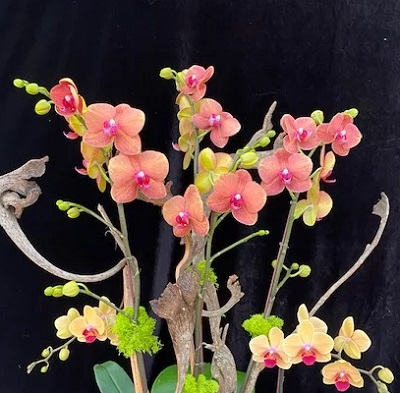

Let's Talk Phalaenopsis
A beginners guide to care, Nov 17, 2020
So, you saw this beautiful Phalaenopsis Orchid in the garden center of the local big box market. Should you bring it home? Aren't orchids terribly delicate? Well, while some are, the answer here is simple. Yes! You SHOULD bring it home and NO its not terribly delicate!Water
The biggest mistake many beginners make is that they water too often. In effect, they end up killing their plants with 'kindness". Very few orchids live in soil. Many of the species kept by hobbyists are epiphytes meaning that they have evolved to live attached to the bark of trees where they get their moisure from rain, fog, and dew. This lets their roots dry between waterings and is something we have to mimic when we keep them. It's important to always consider what media the plant is potted in. For example, bark retains less water than moss but more than a cork slab. So, if your plant is potted in a bark based media, watering once a week is generally sufficient. If your plant is potted in moss, water only when the top of the moss feels dry--even slightly crunchy. If it is mounted on cork you would mist it daily, sometimes more often in dry conditions. While there are differing views on what type of water is best, Phalaenopsis are pretty tolerant. Room temperature water from the tap, rain water, or water scooped out from your pet fish aquarium all work just fine! There is a great video on just this topic below!
Feeding
Yes, your orchid needs to be fed! There are many options out there and most experienced growers all have their favorite brands. For myself, I prefer FeedMe! MSU found on Repotme.com. It is a water soluable formula specially formulated for orchids and works in RO, Rain, or Tap water. But there are many brands out there and most will serve the purpose. Whatever you choose, follow the instructions to the letter. When feeding orchids more is NOT better! It is best to feed with a weak soution often than to give a strong solution only occasionally. The saying "feed weakly weekly" is great advice!
Light
Phalaenopsis are ‘low’ light orchids. This is part of why they are so popular in those big box garden centers. They grow beautifully in an east window and can be grown in a south or west window if protected by a sheer curtain. A phal’s leaves should be olive green and smooth. If they are darker it means the plant isn't getting enough light. If the leaves are reddish at all, the plant is getting too much light. Direct sun, even for short periods, can be fatal so always keep your Phal out of direct sunlight.
She-Shed Orchids!
 My friend Annette opened up her greenhouse earilier this year. She has AMAZING, healthy, plants that you can't find everywhere else and she packs them to perfection for shipping! Check her out and tell her Shere sent you!
About the Author
Shere started growing orchids as a child in Illinois after taking a trip to Hausermans House of Orchids with her mother. Today her collection has swelled to over 200 vibrant, healthy, plants and she is always happy to share her knowledge with new hobbyists.